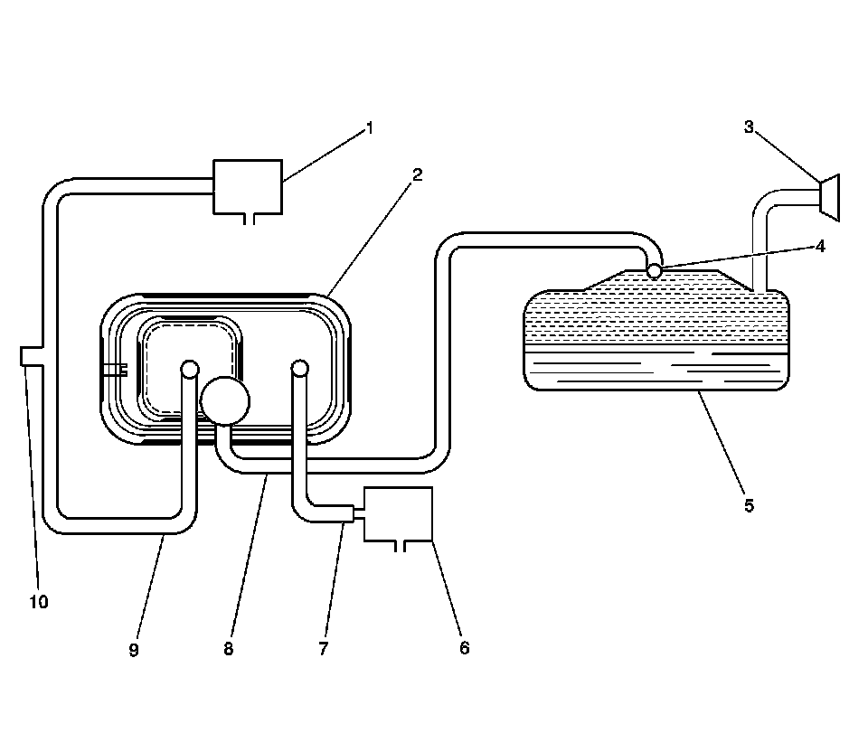

Vacuum and Vapor Hose Diagrams
Evaporative Emissions Hose Routing Diagram
EVAP System Overview

1 - EVAP Canister Purge Solenoid Valve
2 - EVAP Canister
3 - Fuel Fill Neck/Fill Cap
4 - Rollover Valve/Fuel Tank Pressure (FTP) Sensor
5 - Fuel Tank
6 - EVAP Canister Vent Solenoid Valve
7 - Vent Hose/Pipe
8 - EVAP Vapor Pipe
9 - EVAP Purge Pipe
10 - EVAP Service Port